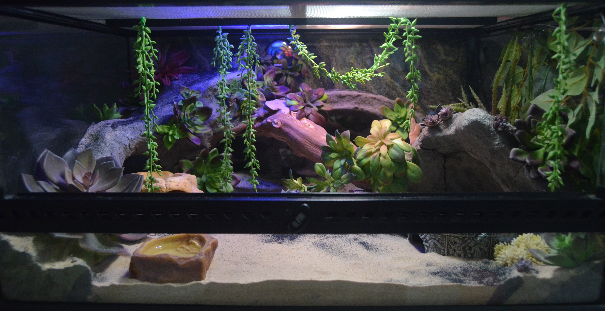
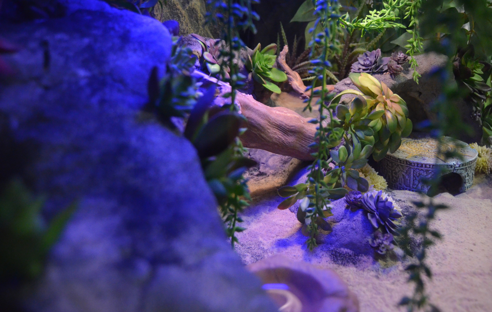

Естественная среда обитания
Животное небольшое, около 20 см в длину. Тело покрыто мелкой чешуей, на которой тут и там выделяются пупырышки. Окрас имеет много вариантов (морф): от ярко-рыжих до фиолетово-оливковых оттенков. Морфы выводят с помощью селекции, получаются очень интересные вариации, которые привлекают даже опытных террариумистов.
Минимальный размер террариума для одного геккона: 30×30×30 см. Однако в идеале желательно 45×45×30 см и больше.

Температура в террариуме делится на две зоны: теплая треть и прохладная зона.
Днём, в теплой зоне, температура должна быть 30-33 градуса. В противоположном, холодном углу — 23-26 градусов. Для обогрева в террариуме удобнее всего использовать термокамень или термомат. В случае использования термомата температура регулируется слоем субстрата. Если требуется увеличить температуру в теплой зоне, то нужно уменьшить слой песка в зоне прогрева.
Ночью желателен перепад температур, поэтому обогревательные и осветительные приборы нужно отключать.

Эублефары очень любят копать и рыть, поэтому в качестве субстрата используют натуральные пустынные грунты, такие как Песок Пустыни или Каменная Пустыня.
В террариуме должны быть установлены укрытия. Они могут быть выполнены в виде камня. Можно соорудить пещеры и норы из специальных субстратов. Дополнительно размещают коряги, камни и декорации, по которым рептилия может перемещаться.
Для создания естественных природных условий в качестве освещения в террариум устанавливают лампы Зрение Рептилий или Естественный Свет. Для стимуляции активности и брачных игр в ночное время не помешает установка лампы ночного видения Ночь Гло.
Для ночного освещения можно использовать светильник Полная Луна, который автоматически включается при выключении дневного света, помогая гекконам видеть в темноте.
Световой день в террариуме обычно составляет 12-14 часов.

Используйте террариум только с проверенной системой вентиляции, которая способствует хорошему воздухообмену и препятствует запотеванию стекол.
Влажность в террариуме поддерживается только в период линьки. Когда эублефар готовится к линьке (посветлел и помутнел окрас), под укрытием увлажняется песок. Делайте так каждый раз с наступлением этого периода. Если вы используете специальные влажные камеры WET ROCK, то необходимость в дополнительном увлажнении почвы отпадает.
Леопардовые гекконы пьют воду, лакая как котики из миски, поэтому в террариуме должна быть размещена маленькая поилка, которую регулярно пополняют свежей питьевой водой.